第 9 章 自然对流#
本章解决：没有风扇、没有泵，流体靠什么流动、换热怎么定量算——只要流体里存在密度梯度，又有一个与密度成正比的体积力（通常就是重力），两者一组合就是浮升力（buoyancy force），它驱动的流动叫自然对流（free convection，或 natural convection）。本章把体积力项接进动量方程（布西内斯克近似），让格拉晓夫数（Grashof number）顶替雷诺数的角色，再逐一给出竖平板、倾斜与水平板、横圆柱、球、平行板通道、封闭夹层的完整关联式；最后用 \(Gr/Re^2\) 判据回答"强制与自然并存时怎么办"。前几章的强制对流关联式在低流速下会悄悄失效——本章补上这块拼图。
9.0 本章导图#
9.1 物理考虑（Physical Considerations）#
强制对流的流动由外部条件（风扇、泵、固体在流体中的推进）诱发；本章讨论没有强制速度、但流体内部照样存在对流环流的情形——自然对流（free convection）。它的两个必要条件：
- 流体中存在密度梯度（mass density gradient）；
- 存在一个与密度成正比的体积力（body force）。
两者结合的净效果是浮升力。实践中体积力通常是重力，也可以是旋转流体机械中的离心力、大气与海洋旋转运动中的科里奥利力。最常见的密度梯度来自温度梯度：气体和液体的密度一般随温度升高而减小（流体受热膨胀）。
但"有密度梯度 + 有重力"并不保证一定有自然对流。看图 9.1：两块大的水平平板之间夹着流体，\(T_1 \ne T_2\)。
- 情形 a（下板热、上板冷）：密度沿重力方向减小。温差超过临界值后，浮升力足以克服黏性力的阻滞——上层重流体下沉（边下沉边被加热），下层轻流体上浮（边上浮边冷却），形成图示的环流。这叫不稳定（unstable）温度梯度，热量靠自然对流从下板传到上板。
- 情形 b（下板冷、上板热）：密度不再沿重力方向减小，分层是稳定的（stable），没有整体流动，热量（从上到下）只能靠导热。
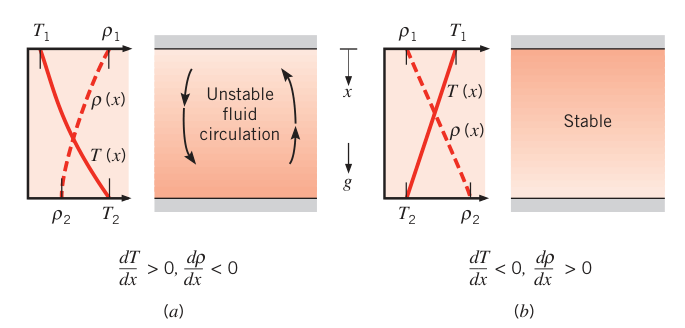
按流动是否被表面束缚分类：
- 自由边界流（free boundary flows）：没有相邻表面。两种典型形态见图 9.2：
- 羽流（plume）：浸没热物体上方的流体因浮升力上升，把周围静止流体卷吸（entrain）进来。热丝上方的羽流宽度随距离增大，但因黏性作用和流体冷却（浮升力随之减弱）最终耗散。羽流的初始速度为零。
- 浮力射流（buoyant jet）：有初始速度的热流体水平射入较冷的静止介质后，因浮升力逐渐转为竖直向上运动——电站冷凝器温排水排入冷水库就是这个场景。
- 区别只在初始流体速度：羽流为零，浮力射流为有限值。
- 表面束缚流（本章主角）：经典例子是竖直加热平板上的边界层发展（图 9.3）。板浸没在广延静止介质（extensive, quiescent medium——广延指原则上无限大，静止指远离壁面处速度为零）中。\(T_s > T_\infty\) 时，近壁流体密度小于远处流体，浮升力驱动受热流体竖直上浮并卷吸环境流体，形成自然对流边界层。
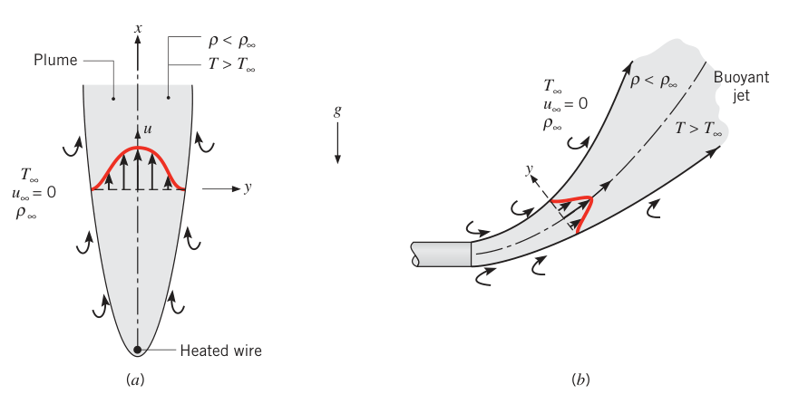
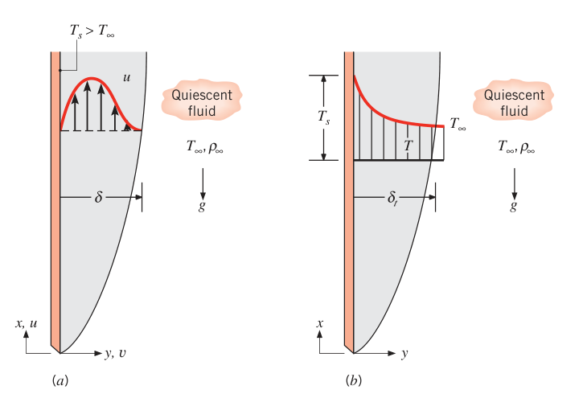
自然对流速度剖面与强制对流的本质区别：\(T_s > T_\infty\) 时，速度在 \(y = 0\) 处为零（无滑移），在 \(y \to \infty\) 处也为零（远处流体静止），中间某处有极大值——受热上浮的流体在壁面附近被黏性力拖住、在远处又没有可跟随的来流，只能"在边界层内部"形成一股向上的流动。若 \(T_s < T_\infty\)，同样会形成自然对流边界层，只是流体沿壁面向下运动。
自然对流的速度一般远小于强制对流，换热速率相应较低——但别因此轻视它：多模式换热的系统里，自然对流往往构成最大的热阻，直接决定系统的设计或性能；要减少散热、降低运行成本时，自然对流还常常是优先选项。发电与电子设备的运行温度、热制造过程、建筑温度分布与空调热负荷、火灾中有毒燃烧产物的扩散、海洋与大气运动及其伴随的传热传质，全都由自然对流主导。
9.2 层流边界层的控制方程（The Governing Equations for Laminar Boundary Layers）#
自然对流与强制对流的方程都源自守恒原理，惯性力、黏性力、平流与扩散照旧起作用；区别在于浮升力进场，而且是驱动流动的主力。
考虑图 9.3 的浮升力驱动层流边界层，假设：稳态、二维、常物性，重力沿 \(-x\) 方向；流体不可压——唯一的例外是在浮升力项中保留密度变化，因为正是这个变化诱发运动；边界层近似（6.4.1 节）成立。
x 方向动量方程（附录 E 的式 E.2）在上述简化下退化为边界层方程（式 6.28），但要保留体积力项 \(X\)。只有重力时单位体积的体积力 \(X = -\rho g\)，于是
其中 \(dp_\infty/dx\) 是边界层外静止区域的自由流压强梯度。该区域 \(u = 0\)，式 (9.1) 退化为静力学关系
把式 (9.2) 代回式 (9.1)：
其中 \(\Delta\rho = \rho_\infty - \rho\)。式 (9.3) 右端第一项就是单位质量的浮升力——流动之所以产生，正是因为 \(\rho\) 是变量。若密度变化只由温度变化引起，这项可以用一个流体物性——体积膨胀系数（volumetric thermal expansion coefficient）来表达：
它是"定压下温度每变 1 K，密度相对变化多少"的热力学物性度量。取近似形式
由此得密度的线性化表达
把线性化密度代回式 (9.3)，得到布西内斯克近似（Boussinesq approximation）下的 x 动量方程：
浮升力（驱动流动的项）与温度差的关系一目了然。
拓展：ρ = ρ∞[1 − β(T − T∞)] 这一步在干什么
严格的 \(\beta\) 是偏导数（式 9.4），而边界层里需要的是"给定温差，密度变了多少"的有限差分版本。把 \((\partial\rho/\partial T)_p\) 换成 \((\rho-\rho_\infty)/(T-T_\infty)\)、基准密度取 \(\rho_\infty\)，整理一步就得到线性化关系：温度比环境高 \(\beta\Delta T\) 的份额，密度就比环境低同样的份额。这一近似只在 \(\beta(T-T_\infty) \ll 1\) 时成立——对空气（\(\beta \approx 1/300\ \mathrm{K^{-1}}\)）意味着温差远小于 300 K，工程上几乎所有自然对流问题都满足；温差极大时才需要回头用变物性方程。
由于浮升力只进动量方程，质量与能量守恒方程与强制对流完全相同——式 (6.27) 与 (6.29) 直接拿来用（能量方程忽略黏性耗散，自然对流的小速度下这当然合理）。完整的控制方程组：
数学上，式 (9.7) 里的浮升力项把事情搞复杂了：流动问题（9.6、9.7）再也不能抛开温度场（9.8）单独求解——动量方程的解依赖 \(T\)，而 \(T\) 又来自能量方程。三个方程强耦合，必须联立求解。这是自然对流数学结构与强制对流的最大不同。
\(\beta\) 怎么取值取决于流体。理想气体（\(\rho = p/RT\)）：
\(T\) 是绝对温度（必须用 K）。液体和非理想气体从物性表（附录 A）查。
9.3 相似性考虑（Similarity Considerations）#
和第 6 章强制对流一样，把控制方程无量纲化，就能找出自然对流的无量纲参数。引入
其中 \(L\) 是特征长度，\(u_0\) 是参考速度。注意自然对流的自由流是静止的，没有逻辑上的外部参考速度（不像强制对流有 \(V\) 或 \(u_\infty\)），\(u_0\) 可以自由选。动量与能量方程（9.7、9.8）化为
式 (9.10) 右端第一项就是浮升力的无量纲化身。参考速度的方便取法是 \(u_0^2 = g\beta(T_s - T_\infty)L\)，让 \(T^*\) 的系数为 1。此时 \(Re_L = [g\beta(T_s - T_\infty)L^3/\nu^2]^{1/2}\)。习惯上把这个雷诺数的平方定义为格拉晓夫数：
于是式 (9.10)、(9.11) 中的 \(Re_L\) 换成 \(Gr_L^{1/2}\)——更准确地说，\(Gr_L^{1/2}\) 在自然对流中扮演的角色等同于强制对流中的 \(Re_L\)。由无量纲方程的形式可以直接预期关联式的形状：
物理意义要分清：雷诺数量度流体微团上惯性力与黏性力之比；格拉晓夫数量度浮升力与黏性力之比。
强制与自然对流的并存判据。设图 9.3 的边界层有非零自由流速度 \(u_\infty\)。这时取特征速度 \(u_\infty\) 更方便（无量纲速度的远场边界条件就是 \(u^* \to 1\)），式 (9.10) 的 \(T^*\) 项将乘上 \(Gr_L/Re_L^2\)，努塞尔数关联式变成 \(Nu_L = f(Re_L, Gr_L, Pr)\)。经验法则：
- \(Gr_L/Re_L^2 \approx 1\)：强制与自然效应相当，必须同时考虑（混合对流，9.9 节）；
- \(Gr_L/Re_L^2 \ll 1\)：浮升力可忽略，\(Nu_L = f(Re_L, Pr)\)；
- \(Gr_L/Re_L^2 \gg 1\)：强制流可忽略，\(Nu_L = f(Gr_L, Pr)\)。
拓展：为什么是平方比 Gr/Re² 而不是 Gr/Re
格拉晓夫数的构造是 \(Gr = g\beta\Delta T L^3/\nu^2\)。把它开平方，\(Gr^{1/2}\) 的量纲结构（\(gL\Delta T\) 开根号除以 \(\nu\)）恰好像一个"速度"：\(u_0 = \sqrt{g\beta\Delta T L}\) 正是浮升力能造成的特征速度量级。所以 \(Gr^{1/2}\) 对应"自然对流的速度"，\(Re = u_\infty L/\nu\) 对应"强制对流的速度"，两个速度之比的平方就是 \(Gr/Re^2\)——判据天然带着平方。
9.4 竖直表面的层流自然对流（Laminar Free Convection on a Vertical Surface）#
讨论最多的特例：广延静止介质中的等温竖直表面（图 9.3）。式 (9.6)–(9.8) 配如下边界条件求解：
（边界层近似成立的前提是 \(Gr_x Pr \gtrsim 10^4\)；再靠近前缘处，边界层厚度相对 \(x\) 太大，近似失效。）
奥斯特拉赫相似解（Ostrach solution）。引入相似变量
并用流函数（stream function）表示速度分量：
于是 x 方向速度为
撇号表示对 \(\eta\) 求导，\(f'(\eta) = df/d\eta\)。y 方向速度 \(v = -\partial\psi/\partial x\) 同理可得。引入无量纲温度
三个偏微分方程（9.6–9.8）化成两个常微分方程：
\(f\) 是速度边界层的关键因变量；连续方程 (9.6) 已经由流函数自动满足。变换后的边界条件：
奥斯特拉赫数值解的结果见图 9.4：任一 \((x, y)\) 处的 \(u\) 与 \(T\) 都能从图中读出。注意两个剖面的特征：
- 速度剖面（图 9.4a）：壁面与无穷远处都为零，峰在边界层内部；\(Pr\) 越大峰值越低、边界层越薄。边界层外缘处 \(\eta \approx 6.0\)（对 \(Pr = 0.7\) 的空气）。
- 温度剖面（图 9.4b）：从壁面的 1 单调衰减到 0。
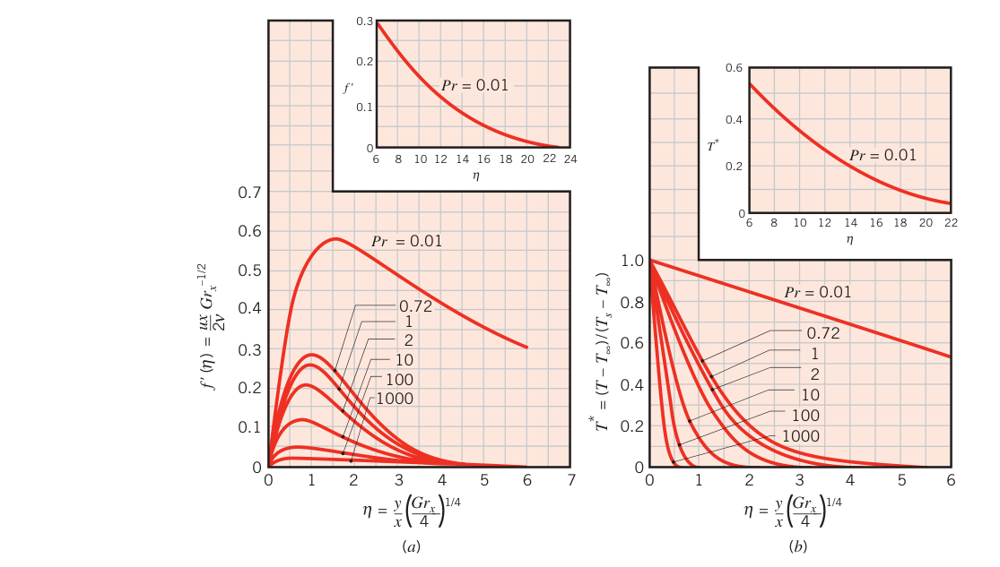
换热关联式从这里长出来。局部努塞尔数按牛顿冷却公式与傅里叶定律定义：
壁面热流密度用傅里叶定律：\(q_s'' = -k\,\partial T/\partial y|_{y=0}\)。把 \(\partial T/\partial y\) 用式 (9.13)、(9.16) 换成对 \(\eta\) 的导数：
壁面处无量纲温度梯度是 \(Pr\) 的函数，记作 \(g(Pr)\)——这从图 9.4b 一眼可见。该函数已数值确定，插值公式（误差 0.5% 以内，\(0 < Pr < \infty\)）：
平均换热系数。把局部 \(Gr_x = g\beta(T_s - T_\infty)x^3/\nu^2\) 代入式 (9.19)，沿板长 \(L\) 积分：
用式 (9.19) 在 \(x = L\) 处的局部值改写：
以上结果对 \(T_s > T_\infty\) 与 \(T_s < T_\infty\) 都成立。冷板情形只是"镜像"：前缘在板的顶端，\(x\) 沿重力方向定义。
拓展：平均 Nu 为什么恰是局部 Nu 的 4/3 倍
式 (9.19) 说明 \(h_x \propto x^{-1/4}\)（把 \(Gr_x^{1/4} \propto x^{3/4}\) 除掉 \(x\)）。沿板平均：\(\overline{h} = (1/L)\int_0^L h_x\,dx = (1/L)\int_0^L Cx^{-1/4}dx = (4/3)CL^{-1/4} = (4/3)h_L\)。凡是 \(Nu \propto Ra^{1/4}\) 的层流自然对流都有这个 4/3 倍关系；反过来记：湍流（\(Nu \propto Ra^{1/3}\)）时 \(h\) 与位置无关，平均就等于局部。
9.5 湍流的影响（The Effects of Turbulence）#
自然对流边界层并非只有层流。与强制对流一样，流动失稳后扰动被放大，层流就会向湍流转捩（图 9.5）。
转捩取决于浮升力与黏性力的相对大小，习惯上用瑞利数（Rayleigh number，即格拉晓夫数与普朗特数之积）关联。竖直平板的临界瑞利数：
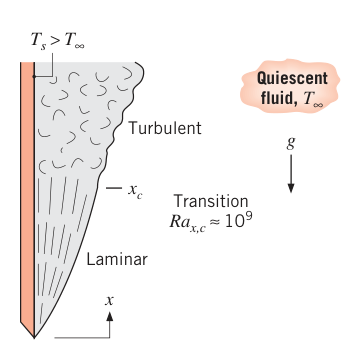
和强制对流一样，转捩对换热影响巨大：上一节的层流分析解只在 \(Ra_L \lesssim 10^9\) 时适用；湍流段要靠实验数据整理关联式（下一节）。
9.6 经验关联式：外部自然对流流动（Empirical Correlations: External Free Convection Flows）#
前面只处理了竖板层流与转捩；工程上还有湍流、还有各种几何。对常见的浸没（外部流动）几何，关联式通常写成
其中瑞利数
基于几何的特征长度 \(L\)。典型地 \(n = 1/4\)（层流）与 \(1/3\)（湍流）——湍流时 \(\overline{h}_L \propto L^{n-1} = L^0\)，与尺寸无关。所有物性一律取膜温度（film temperature，定性温度）：
9.6.1 竖直平板（The Vertical Plate）#
式 (9.24) 型的关联式（McAdams 一系）：
- 层流（\(10^4 \le Ra_L \le 10^9\)）：\(C = 0.59\)，\(n = 1/4\)；
- 湍流（\(10^9 \le Ra_L \le 10^{13}\)）：\(C = 0.10\)，\(n = 1/3\)。
丘吉尔–丘（Churchill and Chu）全范围关联式覆盖整个 \(Ra_L\) 范围：
式 (9.26) 满足大多数工程计算；层流段想再准一点，用
两项结构各有含义：\(Ra_L\) 适中偏大时第二项主导，关联式与式 (9.24) 同型——只是常数 \(C\) 换成了 \(Pr\) 的函数；此时式 (9.27) 与 9.4 节的分析解（式 9.21、9.20）定量吻合得极好。\(Ra_L\) 很小时第一项主导：两式首项行为一致（\(0.825^2 \approx 0.68\)）。首项常数的存在，补偿的是小瑞利数下边界层假设失效、沿板面方向的平行导热变得重要这一事实。
拓展：读关联式先看两头
9.26/9.27 是"两条极限的插值"：小 \(Ra\) 端回归导热型行为（常数项），大 \(Ra\) 端回归 \(Nu \propto Ra^{n}\) 的边界层行为。以后见到形如 \((a + b\,Ra^m)^p\) 的自然对流关联式都这么拆——它不是随手拟合，两端都有物理归属。这也是丘吉尔–丘一族关联式（竖板、横圆柱）能覆盖超宽 \(Ra\) 范围的原因。
恒热流（等 \(q_s''\)）工况。以上全部结果都是等壁温（\(T_s\) 常数）的。若壁面条件是均匀热流，温差 \((T_s - T_\infty)\) 会沿 \(x\) 从前缘开始增大。近似处理法：等温板的 \(\overline{Nu}_L\) 关联式照样可用，只要把 \(\overline{Nu}_L\) 与 \(Ra_L\) 都定义在板中点温差 \(\Delta T_{L/2} = T_s(L/2) - T_\infty\) 上，且 \(\overline{h} = q_s''/\Delta T_{L/2}\)。用式 (9.27) 试差求出 \(\Delta T_{L/2}\)，就得到中点壁温 \(T_s(L/2)\)。若设全程 \(Nu_x \propto Ra_x^{1/4}\)，则
于是任一位置 \(x\) 的温差
更详细的恒热流结果见 Churchill 的综述。
竖直圆柱。高度 \(L\) 的竖直圆柱可直接套用竖板结果，条件是边界层厚度 \(\delta\) 远小于直径 \(D\)。已知该条件在
时满足。不满足的细长竖圆柱：横向曲率会影响边界层发展并增强换热（Cebeci；Minkowycz 与 Sparrow 给出了结果）。
【例 9.1】竖板自然对流边界层厚度与最大速度
已知（Known）：长 0.25 m 的竖直平板保持 70°C，悬置于 25°C 的静止空气中。
求（Find）：板尾缘处的速度边界层厚度与最大上浮速度；并与 5 m/s 空气来流吹过同一块板（强制对流）的边界层厚度比较。
示意图（Schematic）：
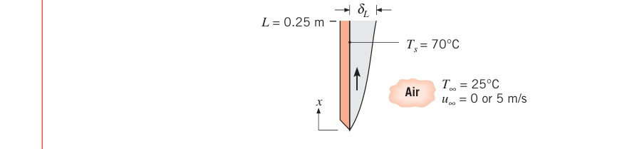
假设（Assumptions）：1. 理想气体；2. 常物性；3. \(u_\infty = 5\) m/s 的工况中浮升力效应可忽略。
物性（Properties）：表 A.4，空气（\(T_f = 320.5\ \mathrm{K}\)）：\(\nu = 17.95 \times 10^{-6}\ \mathrm{m^2/s}\)，\(Pr = 0.7\)，\(\beta = 1/T_f = 3.12 \times 10^{-3}\ \mathrm{K^{-1}}\)。
分析（Analysis）：静止空气中，由式 (9.12)：
于是 \(Ra_L = Gr_L Pr = 4.68 \times 10^7\)。由式 (9.23)，边界层为层流，9.4 节的分析适用。由图 9.4a，\(Pr = 0.7\) 时边界层外缘 \(\eta \approx 6.0\)，即 \(y \approx \delta\)。故尾缘边界层厚度
由图 9.4a，最大速度对应 \(f'(\eta) \approx 0.28\)，用式 (9.15)：
对比强制对流：\(u_\infty = 5\ \mathrm{m/s}\) 时
边界层为层流，由式 (7.19)：
点评（Comments）：
- 自然对流边界层的典型速度远小于强制对流，边界层因此更厚；更厚意味着对传热的阻力更大——自然对流边界层通常是更强的换热瓶颈。
- \((Gr_L/Re_L^2) = 0.014 \ll 1\)，所以 \(u_\infty = 5\) m/s 工况中忽略浮升力的假设成立（9.3 节判据的实战用法）。
【例 9.2】壁炉玻璃门板的自然对流散热
已知（Known）：壁炉口的玻璃风屏（减少室内空气经烟囱外逸）高 0.71 m、宽 1.02 m，温度达到 232°C；室温 23°C。
求（Find）：从壁炉经玻璃屏向室内的对流散热速率。
示意图（Schematic）：
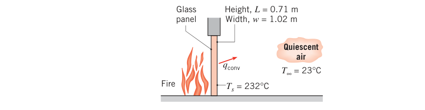
假设（Assumptions）：1. 风屏处于均匀温度 \(T_s\)；2. 室内空气静止；3. 理想气体；4. 常物性。
物性（Properties）：表 A.4，空气（\(T_f = 400\ \mathrm{K}\)）：\(k = 33.8 \times 10^{-3}\ \mathrm{W/(m \cdot K)}\)，\(\nu = 26.4 \times 10^{-6}\ \mathrm{m^2/s}\)，\(\alpha = 38.3 \times 10^{-6}\ \mathrm{m^2/s}\)，\(Pr = 0.690\)，\(\beta = 1/T_f = 0.0025\ \mathrm{K^{-1}}\)。
分析（Analysis）：玻璃屏向室内的自然对流散热由牛顿冷却公式给出：
\(\overline{h}\) 由瑞利数确定。用式 (9.25)：
由式 (9.23)，\(Ra_L > 10^9\)，玻璃屏上发生了向湍流的转捩，应采用全范围关联式 (9.26)：
点评（Comments）：
- 相对自然对流，辐射常常不小。取玻璃发射率 \(\varepsilon = 1.0\)、\(T_{sur} = 23^\circ\mathrm{C}\)，用式 (1.7)：
辐射超过自然对流的 2 倍还多。
- 辐射与自然对流的相对贡献随玻璃温度强烈变化：辐射 \(q \propto T_s^4\)，自然对流 \(q \propto T_s^n\)（\(1.25 \le n \le 1.33\)），温度越高辐射占比越大。对 \(50 \sim 250^\circ\mathrm{C}\) 逐点计算并作图即可看清这一趋势（各点的空气物性按对应 \(T_f\) 取）。
9.6.2 倾斜与水平平板（Inclined and Horizontal Plates）#
倾斜平板。竖板与重力矢量对齐，浮升力全部用于产生沿板面的流动。板一旦倾斜，浮升力就有了垂直于板面的分量：
- 冷板的顶面（图 9.6a）：浮升力的法向分量把下降的边界层流"按"在表面上。沿板分量减为 \(g\cos\theta\)，流速减小，顶面对流换热减弱。
- 冷板的底面（图 9.6a、b）：法向分量把流体推离表面，边界层发展被一股股排出的冷流体团打断，流动变成三维的（图 9.6b 是端视图，展向 \(z\) 上冷流体团不断被较热的环境流体替换）。热边界层变薄，底面对流换热增强——三维流动带来的增强通常超过 \(g\) 分量减小带来的削弱，合起来是增强。
- 热板类似（图 9.6c、d）：三维流动出现在上表面（热流体团从上表面排出）。
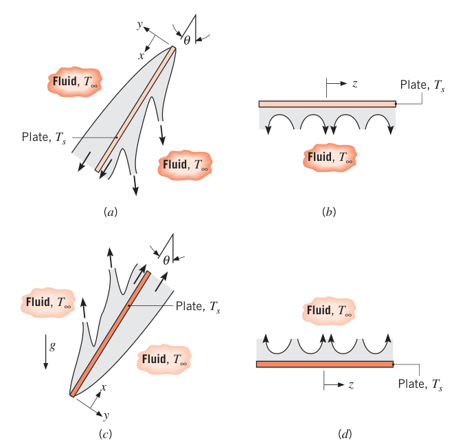
Rich 的早期研究建议：倾斜板的换热系数用竖板关联式、把 \(Ra\) 中的 \(g\) 换成 \(g\cos\theta\) 来算。后来确认这一做法只对冷板顶面与热板底面（即 \(g\cos\theta\) 分量把边界层压在表面上的那一侧）可靠；对热板顶面与冷板底面，三维流动使通用关联式难以建立，应查专门文献。推荐：\(0 < \theta \le 60°\) 时，冷板顶面/热板底面用 \(g \to g\cos\theta\) 代入式 (9.26) 或 (9.27) 算平均努塞尔数；相对的另一面没有通用推荐。
水平平板。浮升力完全垂直于表面。流动形态与换热强烈依赖表面冷热与朝向（图 9.7）：
- 冷面朝上（图 9.7a）、热面朝下（图 9.7d）：浮升力驱动的下降/上升趋势被板挡住，流体必须先横向流动、绕到板边缘才能下降/上升——对流效果差。
- 冷面朝下（图 9.7b）、热面朝上（图 9.7c）：下降/上升的流体团直接把换热"搬走"，质量守恒又保证环境流体不断补充——换热有效得多。
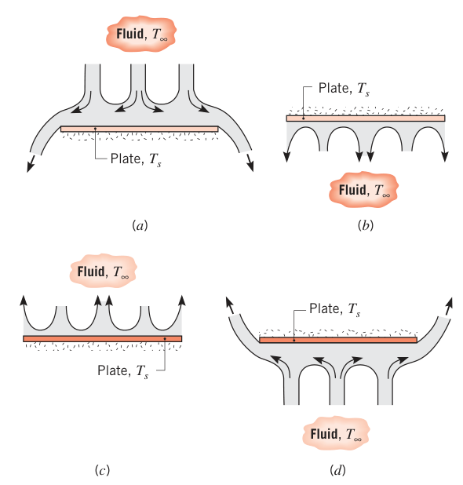
不同形状（方形、矩形、圆形……）的水平板要共用一套关联式，就得先统一特征长度。实验表明，取
（\(A_s\) 为单侧板面面积，\(P\) 为周长）后，各种形状可以共用同一组关联式：
热面朝上或冷面朝下：
热面朝下或冷面朝上：
更多关联式见 Raithby 与 Hollands 的综述。
拓展：L = As/P 的直觉
对边长 \(w\) 的正方形板，\(A_s/P = w^2/(4w) = w/4\)；对半径 \(r\) 的圆板，\(= \pi r^2/(2\pi r) = r/2\)。它介于"边长"与"半边长"之间，本质是给"流体从板边缘绕入/绕出"的平均路程一个统一度量：形状不同的板，只要 \(A_s/P\) 相同，边缘供流路径就相当，实验数据就能叠到一条线上。例 9.3 的矩形风道顶/底面用的正是 \(L = w/2\)。
【例 9.3】供暖风道的自然对流热损失（与保温对比）
已知（Known）：宽 0.75 m、高 0.3 m 的长矩形供暖风道，外表面维持 45°C；风道无保温，置于住宅下方爬行空间 15°C 的静止空气中。
求（Find）：单位长度风道的散热速率。
示意图（Schematic）：
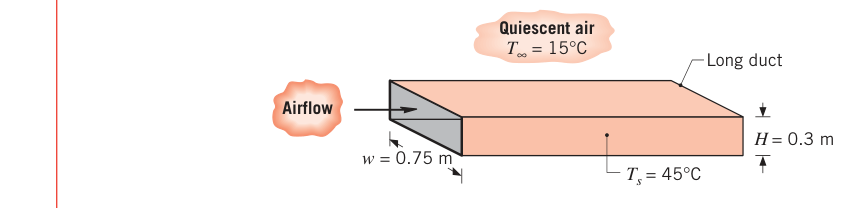
假设（Assumptions）：1. 环境空气静止；2. 表面辐射可忽略；3. 理想气体；4. 常物性。
物性（Properties）：表 A.4，空气（\(T_f = 303\ \mathrm{K}\)）：\(\nu = 16.2 \times 10^{-6}\ \mathrm{m^2/s}\)，\(\alpha = 22.9 \times 10^{-6}\ \mathrm{m^2/s}\)，\(k = 0.0265\ \mathrm{W/(m \cdot K)}\)，\(\beta = 0.0033\ \mathrm{K^{-1}}\)，\(Pr = 0.71\)。
分析（Analysis）：散热来自竖直两侧与水平顶、底面的自然对流。由式 (9.25)：
两侧面：\(L = H = 0.3\ \mathrm{m}\)，\(Ra_L = 7.07 \times 10^7\)，层流，用式 (9.27)：
顶面与底面：\(L = A_s/P = w/2 = 0.375\ \mathrm{m}\)，\(Ra_L = 1.38 \times 10^8\)，分别用式 (9.31)、(9.32)：
单位长度热损失：
点评（Comments）：
- 加保温。裹一层 25 mm 厚的毡类保温材料（\(k = 0.035\ \mathrm{W/(m \cdot K)}\)），各表面的热流可写成导热热阻与对流热阻的串联：
外表面温度 \(T_{s,2}\) 未知，且空气物性与 \(\overline{h}\) 都依赖 \(T_{s,2}\)，三个表面（侧、顶、底）各解各的，迭代求解。结果：
| 表面 | \(T_{s,2}\) | \(\overline{h}\) [W/(m²·K)] | \(q'\) [W/m] |
|---|---|---|---|
| 侧面（两面） | 24°C | 3.18 | 17.5 |
| 顶面 | 23°C | 3.66 | 22.8 |
| 底面 | 30°C | 1.36 | 15.5 |
忽略保温层角部效应，总热损失：
保温把自然对流散热砍掉 76%。
- 辐射仍未计入。无保温风道的辐射损失（\(\varepsilon = 1\)，\(T_{sur} = 288\ \mathrm{K}\)，式 1.7）为 \(q_{rad}' = 398\ \mathrm{W/m}\)——比对流的 234 W/m 还大。把辐射放进能量平衡会降低外表面温度、减小对流部分，但总损失（对流 + 辐射）会增加。
9.6.3 长水平圆柱（The Long Horizontal Cylinder）#
这个几何被研究得极多。Morgan 关联式（等温圆柱）：
\(C\)、\(n\) 按表 9.1 取，\(Ra_D\) 与 \(\overline{Nu}_D\) 基于直径 \(D\)。
表 9.1 式 (9.33) 的常数（水平圆柱，Morgan）
| \(Ra_D\) | \(C\) | \(n\) |
|---|---|---|
| \(10^{-10}\)–\(10^{-2}\) | 0.675 | 0.058 |
| \(10^{-2}\)–\(10^{2}\) | 1.02 | 0.148 |
| \(10^{2}\)–\(10^{4}\) | 0.850 | 0.188 |
| \(10^{4}\)–\(10^{7}\) | 0.480 | 0.250 |
| \(10^{7}\)–\(10^{12}\) | 0.125 | 0.333 |
丘吉尔–丘关联式覆盖宽瑞利数范围：
以上给出的是等温圆柱全周平均努塞尔数。局部行为看图 9.8：热圆柱的边界层从下缘驻点 \(\theta = 0\) 开始发展，两侧对称向上汇聚，在顶部 \(\theta \to \pi\) 处形成上升羽流。全程层流时，局部 \(Nu_\theta\) 在 \(\theta = 0\) 最大、随 \(\theta\) 单调衰减；\(Ra_D\) 足够大（\(\gtrsim 10^9\)）时边界层内发生转捩，单调衰减被打破。冷圆柱镜像：边界层从顶点开始发展，羽流向下。
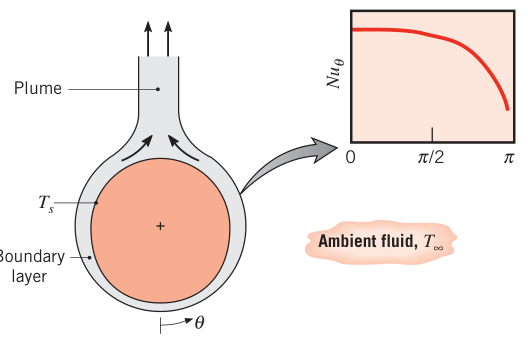
【例 9.4】由冷却曲线反推流体的体积膨胀系数
已知（Known）：例 2.2 的流体：\(k = 0.705\ \mathrm{W/(m \cdot K)}\)，\(\rho = 1146\ \mathrm{kg/m^3}\)，\(c_p = 3587\ \mathrm{J/(kg \cdot K)}\)，\(\mu = 962 \times 10^{-6}\ \mathrm{N \cdot s/m^2}\)。直径 \(D = 20\ \mathrm{mm}\)、初温 \(T_i = 32^\circ\mathrm{C}\) 的长铝棒水平浸入 \(T_\infty = 22^\circ\mathrm{C}\) 的大池该流体中；\(t = 65\ \mathrm{s}\) 时测得棒温 \(T_f = 23^\circ\mathrm{C}\)。
求（Find）：流体的体积膨胀系数 \(\beta\)。
示意图（Schematic）：
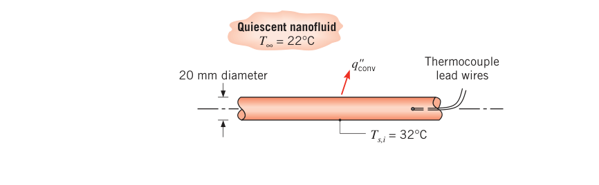
假设（Assumptions）：1. 常物性；2. 棒温空间均匀（集总电容近似适用）。
物性（Properties）：表 A.1，铝（\(\overline{T} = 300\ \mathrm{K}\)）：\(\rho_s = 2702\ \mathrm{kg/m^3}\)，\(c_{p,s} = 903\ \mathrm{J/(kg \cdot K)}\)，\(k_s = 237\ \mathrm{W/(m \cdot K)}\)。
分析（Analysis）：棒与流体的温差随时间衰减，\(\overline{h}\) 由浮升力决定、也随之衰减——这正是 5.3.3 节"换热系数随时间变化"的集总分析场景。由式 (5.28) 与 (5.26)：
其中 \(\theta \equiv T_s - T_\infty\)，且 \(\overline{h} = C_1\theta^n\)。由式 (9.33) \(\overline{Nu}_D = C\,Ra_D^n\)，代入努塞尔数与瑞利数的定义：
与 \(\overline{h} = C_1\theta^n\) 对比即得
定义末态过余温度 \(\theta_f = T_{s,f} - T_\infty\)（\(t = t_f\) 时），并注意 \(\nu_l = \mu_l/\rho_l\)、\(\alpha_l = k_l/(\rho_l c_{p,l})\)、\(A_{s,c}/V = 4/D\)，把式 (3) 代入式 (1)，解出 \(\beta\)：
先假设 \(Ra_D\) 落在 \(10^4 \le Ra_D \le 10^7\)（表 9.1：\(C = 0.480\)，\(n = 0.250\)）。代数（\(\theta_i = 10\ \mathrm{K}\)，\(\theta_f = 1\ \mathrm{K}\)，\(t_f = 65\ \mathrm{s}\)）：
用它反算基于初始温差的瑞利数：
\(\theta_f = \theta_i/10\)，所以冷却全程最小瑞利数 \(Ra_{D,\min} = Ra_{D,\max}/10 = 1.42 \times 10^5\)。于是 \(10^4 \le Ra_{D,\min} < Ra_{D,\max} \le 10^7\)——选用的 \(C\)、\(n\) 合适，\(\beta = 261 \times 10^{-6}\ \mathrm{K^{-1}}\) 成立。
原书笔误：例 9.4 的密度代入值
式 (4) 数值代入中液体密度印作 \(1145\ \mathrm{kg/m^3}\)，与题给（及例 2.2 的）\(1146\ \mathrm{kg/m^3}\) 不一致。按 1146 复算 \(Ra_{D,\max} = 1.42 \times 10^6\) 不变，结论不受影响。
点评（Comments）：
- 把 \(C_1\) 代回式 (1) 即得棒温随时间的历史曲线（原书附图）。
- 温差衰减 → 瑞利数衰减 → \(\overline{h}\) 随冷却过程逐渐减小（已知 \(\theta(t)\) 后由式 (2) 可逐点算出）。
- 最大换热系数 \(\overline{h}_{\max} = 584\ \mathrm{W/(m^2 \cdot K)}\)，对应最大毕渥数 \(Bi_{\max} = \overline{h}_{\max}(D/2)/k_s = 584 \times 0.01/237 = 0.025\)。按式 (5.10) 保守判据 \(Bi_{\max} \le 0.1\)，集总电容近似成立。
- 棒温与浮升力都随时间衰减，流体速度场持续演化，而式 (9.33) 严格说是稳态关联式——这里默认"瞬时换热速率 = 同温差下的稳态换热速率"，即准稳态近似（quasi-steady approximation），精度通常可接受。
9.6.4 球（Spheres）#
丘吉尔关联式，适用于 \(Pr \ge 0.7\)、\(Ra_D \le 10^{11}\)：
\(Ra_D \to 0\) 时退化为 \(\overline{Nu}_D = 2\)——球面与静止无限介质之间的纯导热极限（与式 7.56、7.57 一致）。
本节推荐关联式汇总为表 9.2；其他几何与特殊条件见 Churchill 与 Raithby–Hollands 的综述。
表 9.2 浸没几何自然对流经验关联式汇总
| 几何 | 推荐关联式 | 适用条件 |
|---|---|---|
| 1. 竖直平板 | 式 (9.26) | 无限制 |
| 2. 倾斜平板（冷面朝上或热面朝下） | 式 (9.26) | \(0 \le \theta \le 60°\)，\(g \to g\cos\theta\) |
| 3a. 水平板（热面朝上或冷面朝下） | 式 (9.30)、(9.31) | \(10^4 \le Ra_L \le 10^7,\ Pr \ge 0.7\)；\(10^7 \le Ra_L \le 10^{11}\) |
| 3b. 水平板（冷面朝上或热面朝下） | 式 (9.32) | \(10^4 \le Ra_L \le 10^9,\ Pr \ge 0.7\) |
| 4. 水平圆柱 | 式 (9.34) | \(Ra_D \le 10^{12}\) |
| 5. 球 | 式 (9.35) | \(Ra_D \le 10^{11}\)，\(Pr \ge 0.7\) |
注：竖直圆柱在 \(D/L \ge 35/Gr_L^{1/4}\) 时可按竖板关联式处理。
9.7 平行板通道内的自然对流（Free Convection Within Parallel Plate Channels）#
常见几何：竖直（或倾斜）的平行板通道，两端开口通环境（图 9.9）。板可以是一组肋片（强化基面对环境的自然对流），也可以是一排电路板（板上元件散热）。表面热条件可理想化为等温或恒热流、对称（\(T_{s,1} = T_{s,2}\)；\(q_{s,1}'' = q_{s,2}''\)）或非对称。
竖直通道（\(\theta = 0\)）中浮升力全部沿流向 \(x\)，从 \(x = 0\) 起每块表面各自发展边界层：
- 短通道/大间距（小 \(L/S\)）：各表面独立发展，条件等同于孤立板（isolated plate）——无限介质中的竖板；
- 长通道/小间距（大 \(L/S\)）：对面边界层最终合并，达到充分发展（fully developed）状态。
通道倾斜时浮升力出现法向分量，可能出现强烈影响换热的三维二次流。
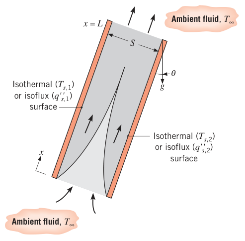
9.7.1 竖直通道（Vertical Channels）#
从 Elenbaas 的基准工作开始，竖直通道（对称/非对称加热，等温/恒热流）被大量研究。对称等温板的半经验关联式：
平均努塞尔数与瑞利数定义为
式 (9.36) 以空气为工质开发，适用范围 \(10^{-1} \le (S/L)Ra_S \le 10^5\)。知道单板的平均努塞尔数即可求出该板的总热流量。充分发展极限（\(S/L \to 0\)）下式 (9.36) 化为
保留 \(L\) 依赖的原因：\(\overline{Nu}_S\) 按固定的入口（环境）温度定义，而不是按未知的流体混合平均温度定义。常见的"一侧等温（\(T_{s,1}\)）、一侧绝热（\(q_{s,2}'' = 0\)）"组合，充分发展极限为
恒热流表面更方便用局部努塞尔数：
并以修正瑞利数关联：
下标 \(L\) 指 \(x = L\) 处（板温最高点）。对称恒热流的充分发展极限：
单侧绝热的非对称恒热流：
把充分发展极限与孤立板极限的结果拼接，Bar-Cohen 与 Rohsenow 得到覆盖全 \(S/L\) 范围的关联式。等温与恒热流分别为：
常数 \(C_1\)、\(C_2\) 按表面热条件查表 9.3。每种情形下：\(Ra_S\)（或 \(Ra_S^*\)）\(S/L \le 10\) 为充分发展极限，\(\ge 100\) 为孤立板极限。
表 9.3 竖直平行板间自然对流的换热参数（Bar-Cohen 与 Rohsenow）
| 表面条件 | \(C_1\) | \(C_2\) | \(S_{opt}\) | \(S_{max}/S_{opt}\) |
|---|---|---|---|---|
| 对称等温板（\(T_{s,1} = T_{s,2}\)） | 576 | 2.87 | \(2.71(Ra_S/S^3L)^{-1/4}\) | 1.71 |
| 对称恒热流板（\(q_{s,1}'' = q_{s,2}''\)） | 48 | 2.51 | \(2.12(Ra_S^*/S^4L)^{-1/5}\) | 4.77 |
| 等温/绝热板（\(T_{s,1}\)，\(q_{s,2}'' = 0\)） | 144 | 2.87 | \(2.15(Ra_S/S^3L)^{-1/4}\) | 1.71 |
| 恒热流/绝热板（\(q_{s,1}''\)，\(q_{s,2}'' = 0\)） | 24 | 2.51 | \(1.69(Ra_S^*/S^4L)^{-1/5}\) | 4.77 |
最优间距 \(S_{opt}\) 与最大间距 \(S_{max}\)。对称等温板阵列：\(S\) 减小时单板换热减弱，但固定体积里能塞进的板数增多——阵列总换热量 \( \overline{h}A_s\) 在 \(S = S_{opt}\) 处出现极大值（\(\overline{h}\) 的衰减与 \(A_s\) 的增长在此乘积最大）。\(S_{max}\) 则以"相邻边界层不合并"为度，保证整板都处于孤立板极限，单板换热最大。竖直肋片阵列（基面宽 \(W\) 固定）正是这个应用：板间质量流量由浮升力与黏性力的平衡决定，\(S\) 越小黏性阻力越大、流量越小；\(S < S_{opt}\) 时 \(\overline{h}\) 因黏性效应的衰减超过 \(A_s\) 的增长，\(S > S_{opt}\) 时 \(A_s\) 的减少超过 \(\overline{h}\) 的增长。
恒热流板：总体积散热率随 \(S\) 减小而增大，但壁温上限约束 \(S\) 不能太小。此时 \(S_{opt}\) 定义为"单位温差（\(T_s(L) - T_\infty\)）体积散热最大"的间距；\(S_{max}\) 仍是"给定热流下壁温最低"的间距（不考虑体积），即恰好阻止边界层合并的值。表 9.3 给出无厚度板的 \(S_{opt}\) 与 \(S_{max}/S_{opt}\)。
物性取平均温度：等温表面 \(\overline{T} = (T_s + T_\infty)/2\)；恒热流表面 \(\overline{T} = (T_{s,L} + T_\infty)/2\)。
拓展：最优间距是自然对流散热器设计的核心
电子设备里密排的散热肋片、机箱里立式插卡的间距，都直接用表 9.3。设计顺序通常是：先按允许壁温（恒热流）或允许总散热量（等温）算出 \(S_{opt}\)，再用 \(S_{max}/S_{opt}\) 检查"再放宽间距是否还有收益"。间距过密（边界层合并、流量枯竭）与过疏（浪费体积）都是设计失败。
9.7.2 倾斜通道（Inclined Channels）#
Azevedo 与 Sparrow 用水做实验：对称等温板与等温–绝热板组合，\(0 \le \theta \le 45°\)，处于孤立板极限（\(Ra_S(S/L) > 200\)）。下板受热时观察到三维二次流，但全部实验条件的数据都落在 \(\pm 10\%\) 以内：
大倾角 + 下板加热时偏离最明显——三维二次流的换热增强所致。物性取 \(\overline{T} = (T_s + T_\infty)/2\)。
9.8 经验关联式：封闭空间（Empirical Correlations: Enclosures）#
前面都是"表面 + 广延流体"。工程同样常见的是两个不同温度的表面夹着一层封闭流体——封闭空间（enclosure，工程上也常叫夹层）。本节给出最常见几何的关联式。
9.8.1 矩形封闭腔（Rectangular Cavities）#
矩形封闭腔（图 9.10）研究得最充分：两个相对壁面分别维持 \(T_1 > T_2\)，其余壁面绝热。倾角 \(\tau\) 从 0°（下加热的水平腔）到 90°（侧壁加热的竖腔）到 180°（上加热的水平腔）。穿过夹层的热流密度：
\(h\) 强烈依赖高宽比 \(H/L\) 与倾角 \(\tau\)；宽度比 \(w/L\) 大时其影响可忽略。
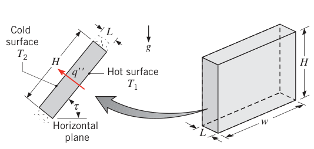
下加热的水平腔（\(\tau = 0\)，\(H/L\)、\(w/L \gg 1\)）：\(Ra_L\) 小于临界值 \(Ra_{L,c} = 1708\) 时，浮升力克服不了黏性阻力，腔内没有对流——热量靠（气体时还有辐射之外的）一维导热穿过流体层，\(h = k/L\)，\(Nu_L = 1\)。其中
后热力学失稳，腔内出现对流：\(1708 < Ra_L \le 5 \times 10^4\) 时是规则排列的纵向涡卷状流胞（roll cells，图 9.11）；再大则流胞破裂，流体运动经历多种形态后转为湍流。Globe 与 Dropkin 的关联式（首近似）：
物性取平均温度 \(\overline{T} = (T_1 + T_2)/2\)；\(L/H\) 足够小（侧壁效应可忽略）时适用。更宽 \(Ra_L\) 范围的关联式见专门文献。
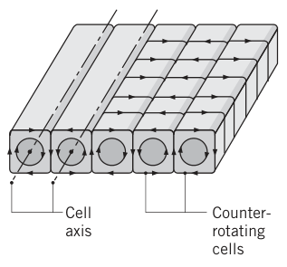
上加热的水平腔（\(\tau = 180°\)）：稳定分层，无辐射时传热只有导热，\(Nu_L = 1\)，与 \(Ra_L\) 无关。
竖直矩形腔（\(\tau = 90°\)）：竖壁分别被加热、冷却，水平壁绝热。流体沿热壁上升、冷壁下降，形成环流/流胞状流动（图 9.12）。\(Ra_L \le 10^3\) 时浮升驱动流很弱，无辐射时传热主要靠穿过流体的导热，\(Nu_L = 1\)。瑞利数增大后流胞增强、集中在贴壁薄边界层里，核心区近乎停滞（角落可发展出附加流胞），侧壁边界层最终转捩为湍流。高宽比 \(1 \le H/L \le 10\)：
更大高宽比（MacGregor–Emery 一系）：
算出的 \(h\) 都配式 (9.48) 使用；物性取 \((T_1 + T_2)/2\)。
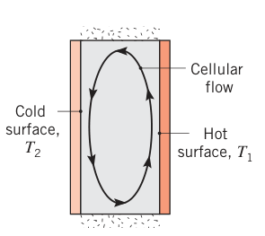
倾斜封闭腔：应用背景是平板太阳能集热器。腔内流动是图 9.11 的涡卷结构与图 9.12 的流胞结构的组合，通常在某个临界倾角 \(\tau^*\) 处发生两种流态的转变，\(\overline{Nu}_L\) 随之突变（表 9.4）。大高宽比（\(H/L \ge 12\)）、\(\tau < \tau^*\) 时，Hollands 等的关联式与数据吻合极好：
上标 \(+\) 表示方括号内的量为负时取零——含义是：\(Ra_L\) 小于临界值 \(Ra_{L,c} = 1708/\cos\tau\) 时腔内无流动。小高宽比时 Catton 建议：
超过临界倾角后（对全部高宽比）：
表 9.4 倾斜矩形腔的临界倾角
| \(H/L\) | 1 | 3 | 6 | 12 | \(\ge 12\) |
|---|---|---|---|---|---|
| \(\tau^*\) | 25° | 53° | 60° | 67° | 70° |
拓展：1708 这个数从哪来（瑞利–贝纳尔失稳）
下加热水平层的临界值 \(Ra_{L,c} = 1708\) 不是拟合出来的，而是线性稳定性理论的结果：平板间无限大流体层对无穷小扰动失稳的严格临界瑞利数。超过它，静止导热状态不再稳定，自发的涡卷流胞出现——这就是经典的瑞利–贝纳尔对流（Rayleigh–Bénard convection）。它是最早被理论+实验双重确认的流体失稳现象之一，也是混沌研究里洛伦兹方程的物理原型。倾斜腔的 \(1708/\cos\tau\) 则是把临界判据沿重力方向分量"折算"的结果。
9.8.2 同心圆筒（Concentric Cylinders）#
长水平同心圆筒之间的环形空间（图 9.13）：Raithby 与 Hollands 处理。环腔内的流动特征是关于竖直中面对称的两个流胞：内筒热、外筒冷（\(T_i > T_o\)）时流体沿内筒上升、沿外筒下降；\(T_i < T_o\) 时流胞反向。长为 \(L\) 的两筒间总热流量写成导热公式（式 3.32）的形式，只是把分子导热系数换成有效导热系数（effective thermal conductivity）\(k_{eff}\)：
理解：一个假想的静止流体若具有 \(k_{eff}\)，它传递的热量与实际运动流体相同。\(k_{eff}\) 的关联式：
\(Ra_c\) 中的特征长度：
式 (9.59) 适用 \(0.7 \le Pr \le 6000\)、\(Ra_c \le 10^7\)；物性取平均温度 \(T_m = (T_i + T_o)/2\)。下限：换热率不可能低于导热极限——式 (9.59) 算出的 \(k_{eff}/k\) 小于 1 时取 \(k_{eff} = k\)。考虑偏心影响的更细关联式见 Kuehn 与 Goldstein。
9.8.3 同心球（Concentric Spheres）#
同样由 Raithby 与 Hollands 处理，总热流量写成球壁导热（式 3.40）加有效导热系数：
\(Ra_s\) 中的特征长度：
适用近似范围 \(0.7 \le Pr \le 4000\)、\(Ra_s \le 10^4\)；物性取 \(T_m = (T_i + T_o)/2\)，同样 \(k_{eff}/k < 1\) 时取 \(k_{eff} = k\)。
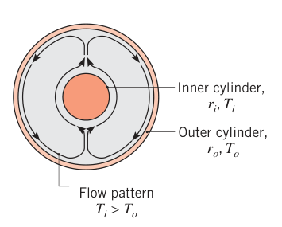
【例 9.5】蒸汽管与辐射屏蔽罩之间的环形夹层换热
已知（Known）：直径 0.1 m 的长管内通蒸汽，管壁维持 120°C。管外同心安装一块辐射屏蔽罩，与管之间留 10 mm 空气间隙。屏蔽罩温度 35°C。
求（Find）：1. 单位管长的自然对流散热速率；2. 间隙改填玻璃纤维毡保温材料后的散热速率。
示意图（Schematic）：
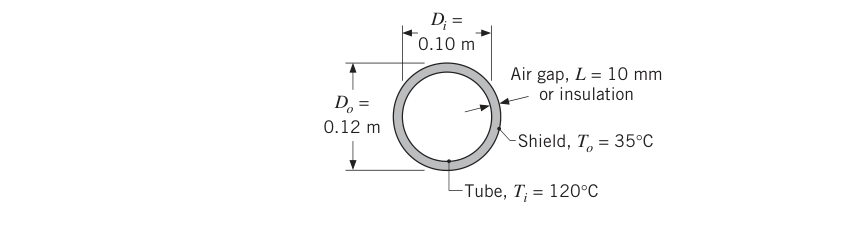
假设（Assumptions）：1. 辐射换热可忽略；2. 与保温材料的接触热阻可忽略；3. 理想气体；4. 常物性。
物性（Properties）：表 A.4，空气（\(T = (T_i + T_o)/2 = 350\ \mathrm{K}\)）：\(k = 0.030\ \mathrm{W/(m \cdot K)}\)，\(\nu = 20.92 \times 10^{-6}\ \mathrm{m^2/s}\)，\(\alpha = 29.9 \times 10^{-6}\ \mathrm{m^2/s}\)，\(Pr = 0.70\)，\(\beta = 0.00285\ \mathrm{K^{-1}}\)。表 A.3，玻璃纤维保温材料（\(T \approx 300\ \mathrm{K}\)）：\(k = 0.038\ \mathrm{W/(m \cdot K)}\)。
分析（Analysis）：
- 由式 (9.58)，单位管长自然对流散热为
\(k_{eff}\) 由式 (9.59)、(9.60) 求。先算特征长度（\(r_i = 0.05\ \mathrm{m}\)，\(r_o = 0.06\ \mathrm{m}\)）：
原书笔误：例 9.5 的特征长度数值
原书此处印作 \(L_c = 0.00117\ \mathrm{m}\)，与式 (9.60) 不符——按自然对数计算应得 \(3.56 \times 10^{-3}\ \mathrm{m}\)（0.00117 恰是用常用对数 \(\log_{10}\) 代入的结果，系计算笔误）。佐证：只有 \(L_c = 3.56 \times 10^{-3}\ \mathrm{m}\) 才能复现原书随后印出的 \(Ra_c = 171\)（若用 0.00117 m，\(Ra_c \approx 6.1\)，与原书全部后续数值矛盾）。本笔记按正确值 3.56 × 10⁻³ m 继续。
- 间隙填保温材料后传热为纯导热——对比式 (3.32) 与式 (9.58)：
点评（Comments）：穿过保温层的导热略大于穿过空气夹层的自然对流散热（100 W/m）——但空气夹层的总散热（对流 + 辐射）可能超过保温层，因为辐射的贡献可观。辐射损失可以用低发射率辐射屏蔽罩压低，计算方法在第 13 章展开。
9.9 混合强制与自然对流（Combined Free and Forced Convection）#
第 6–8 章处理强制对流时默认忽略了自然对流，本章前几节反过来默认强制对流可忽略——两者都是假设。当自然与强制效应相当时，扔掉哪一个都不对。由 9.3 节：
- \(Gr_L/Re_L^2 \ll 1\)：自然对流可忽略；
- \(Gr_L/Re_L^2 \gg 1\)：强制对流可忽略；
- \(Gr_L/Re_L^2 \approx 1\)：混合（combined free and forced，或 mixed）对流区。
浮升力对强制流换热的强化/削弱，强烈依赖浮升力方向与流向的关系。三个经典情形：
- 同向流（assisting flow）：浮升驱动与强制运动同方向——热竖板 + 向上的强制流；
- 逆向流（opposing flow）：方向相反——热竖板 + 向下的强制流；
- 横向流（transverse flow）：方向垂直——横掠热圆柱、球或水平板的水平流动。
同向与横向流中浮升力增强纯强制对流的换热；逆向流中削弱。
外部与内部流动的混合对流数据，常用如下表达式关联：
\(Nu_F\)、\(Nu_N\) 分别按所论几何用纯强制与纯自然对流的既有关联式计算；右端正号用于同向与横向流，负号用于逆向流。拟合效果常以 \(n = 3\) 最好；横向流掠过水平板取 \(n = 7/2\)、掠过圆柱（或球）取 \(n = 4\) 可能更合适。
式 (9.64) 只是一阶近似，严肃的混合对流问题应查文献（20 世纪 70 年代末到 80 年代中期有大量研究）。这类流动有很多反直觉特征：下加热的水平平行板通道会诱发出纵向涡形式的三维流，努塞尔数沿程呈衰减振荡；通道内上、下表面的换热显著不对称；层流强制流的浮升力强化可能很显著，但强制流为湍流时浮升力强化一般可忽略。
9.10 对流传质（Convection Mass Transfer）#
式 (9.3) 的浮升力项源于流体密度变化，而密度变化也可能来自组分浓度梯度——不一定要有温差。把格拉晓夫数推广成更一般的形式：
可用于浓度梯度驱动和/或温度梯度驱动的自然对流。9.2 节说过：密度变化仅由温度引起时 \(\Delta\rho/\rho = -\beta\Delta T\)。若没有温度梯度，浓度变化照样诱发流动，相似性分析给出 \(Sh_L = f(Gr_L, Sc)\)；对流传质关联式可以直接借热质传递类比从传热关联式移植。例如组分 A 从竖直表面蒸发/升华进入静止的环境流体 B，对流传质系数取式 (9.24) 的类比形式：
其中 \(Gr_L\) 用式 (9.65)。若 A 的分子量小于 B，\(\rho_s < \rho_\infty\)，浮升驱动流沿表面向上；反之向下。
类比的适用边界：上述移植只对等温条件成立。温度与浓度梯度并存时，热与质的自然对流同时发生，相似性给出 \(\overline{Nu}_L = f(Gr_L, Pr, Sc)\)、\(\overline{Sh}_L = f(Gr_L, Sc, Pr)\)，其中 \(\Delta\rho = \rho_s - \rho_\infty\) 要同时计入温度与浓度对 \(\rho_s\)、\(\rho_\infty\) 的影响。一阶近似：只要 \(\Delta\rho\) 按双效应合并计算、且 \(Le = Pr/Sc \approx 1\)，仍可分别用 \(\overline{Nu}_L = f(Gr_L, Pr)\)、\(\overline{Sh}_L = f(Gr_L, Sc)\) 定系数。双组分混合物（A + B）中，表面与自由流密度按 \(\rho_s = \rho_{s,A} + \rho_{s,B}\)、\(\rho_\infty = \rho_{\infty,A} + \rho_{\infty,B}\) 定义，各组分密度取相应温度；边界层平均密度 \(\bar\rho = (\rho_s + \rho_\infty)/2\)。
9.11 小结（Summary）#
本章处理了全部或部分源于浮升力的对流流动，引入了表征这类流动的无量纲参数：判别自然对流效应是否重要、并定量算出换热速率的工具已经齐了。全章关联式按几何汇总如下。
全章关联式速查
| 几何/工况 | 关联式 | 适用范围与备注 |
|---|---|---|
| 竖板层流（分析解） | 式 (9.19)–(9.22)：\(Nu_x = (Gr_x/4)^{1/4}g(Pr)\)，\(\overline{Nu}_L = (4/3)Nu_L\) | \(Ra_L \lesssim 10^9\)；\(g(Pr)\) 见式 (9.20) |
| 竖板（全范围） | 式 (9.26)：丘吉尔–丘 | 整个 \(Ra_L\) 范围 |
| 竖板层流（更准） | 式 (9.27) | \(Ra_L \le 10^9\) |
| 竖板分段 | \(C = 0.59,\ n = 1/4\)（层流）；\(C = 0.10,\ n = 1/3\)（湍流） | \(10^4 \le Ra_L \le 10^{13}\) |
| 竖板恒热流 | 竖板式 + 中点温差 \(\Delta T_{L/2}\)，\(\Delta T_x = 1.15(x/L)^{1/5}\Delta T_{L/2}\) | 试差求 \(\Delta T_{L/2}\) |
| 竖圆柱 | 竖板各式 | \(D/L \ge 35/Gr_L^{1/4}\) |
| 倾斜板（冷面朝上/热面朝下） | 竖板式，\(g \to g\cos\theta\) | \(0 < \theta \le 60°\) |
| 水平板（热面朝上/冷面朝下） | \(0.54Ra^{1/4}\)；\(0.15Ra^{1/3}\) | \(10^4 \le Ra \le 10^7,\ Pr \ge 0.7\)；\(10^7 \le Ra \le 10^{11}\) |
| 水平板（热面朝下/冷面朝上） | \(0.52Ra^{1/5}\) | \(10^4 \le Ra \le 10^9,\ Pr \ge 0.7\)；特征长度 \(L = A_s/P\) |
| 水平圆柱 | 式 (9.33)（表 9.1）；式 (9.34)（丘吉尔–丘） | \(Ra_D \le 10^{12}\) |
| 球 | 式 (9.35) | \(Pr \ge 0.7\)，\(Ra_D \le 10^{11}\)；\(Ra \to 0\) 时 \(Nu = 2\) |
| 竖直平行板通道 | 式 (9.36)（Elenbaas）、(9.45)/(9.46)（Bar-Cohen–Rohsenow，表 9.3） | 等温/恒热流、对称/非对称；\(10^{-1} \le (S/L)Ra_S \le 10^5\) |
| 倾斜通道 | 式 (9.47) | 水，\(0 \le \theta \le 45°\)，孤立板极限 |
| 水平夹层（下加热） | 式 (9.49)：Globe–Dropkin | \(3 \times 10^5 \le Ra_L \le 7 \times 10^9\)；\(Ra_{L,c} = 1708\) 以下 \(Nu = 1\) |
| 水平夹层（上加热） | \(Nu_L = 1\) | 无辐射时纯导热 |
| 竖直夹层 | 式 (9.50)–(9.53) | 各自的高宽比与 \(Ra\) 窗口；\(Ra \le 10^3\) 时 \(Nu = 1\) |
| 倾斜夹层 | 式 (9.54)（大高宽比）、(9.55)（小高宽比）、(9.56)/(9.57)（超过 \(\tau^*\)） | \(\tau^*\) 查表 9.4 |
| 同心圆筒 | 式 (9.58)–(9.60) | \(0.7 \le Pr \le 6000\)，\(Ra_c \le 10^7\)；\(k_{eff} \ge k\) |
| 同心球 | 式 (9.61)–(9.63) | \(0.7 \le Pr \le 4000\)，\(Ra_s \le 10^4\)；\(k_{eff} \ge k\) |
| 混合对流 | 式 (9.64)：\(Nu^n = Nu_F^n \pm Nu_N^n\) | \(Gr/Re^2 \approx 1\)；同向/横向取正号，逆向取负号 |
原书章末复习问题（9.11 节自测用）
- 什么是广延静止流体（extensive, quiescent fluid）？
- 产生浮升力驱动流动需要什么条件？
- 热竖板上自然对流边界层的速度剖面与平行板强制流的速度剖面有何不同？
- 自然对流边界层 x 动量方程中浮升力项的一般形式是什么？密度变化仅由温度引起时它如何近似？这个近似叫什么名字？
- 格拉晓夫数的物理意义是什么？瑞利数呢？两者各自随特征长度如何变化？
- 静止空气中的热水平板，顶面还是底面换热更强？为什么？冷水平板呢？
- 竖直平行板通道内的自然对流，通道内的流量由什么样的力平衡决定？
- 等温板竖直通道，为什么存在最优间距？物理依据是什么？
- 竖壁分别被加热与冷却的封闭腔内流动是什么形态？同心圆筒（一热一冷）环腔内的流动呢？
- "混合对流"是什么意思？如何判断一个换热分析是否需要考虑混合对流？什么条件下混合对流增强换热、什么条件下削弱？
- 组分 A 从朝上的水平表面传入静止流体 B：若 \(T_s = T_\infty\) 且 A 的分子量小于 B，对应的传热问题是什么？若 A 的分子量大于 B 呢？
- （对应 9.2–9.4 节）为什么自然对流的动量方程与能量方程必须联立求解？
坑与陷阱#
8 个容易踩的坑
- β 必须配绝对温度：理想气体 \(\beta = 1/T\)，\(T\) 用 K。例 9.1 里 \(T_f = 320.5\ \mathrm{K}\) 对应 \(\beta = 3.12 \times 10^{-3}\ \mathrm{K^{-1}}\)；拿着 47.5°C 直接取倒数就错了 6.7 倍。凡是从附录查不到 \(\beta\) 的流体，用 \(1/T_f\)（气体）或物性表（液体）。
- 特征长度张冠李戴：竖板/竖圆柱用高度 \(L\)；水平板用 \(L = A_s/P\)（矩形风道顶面 = 宽的一半）；横圆柱与球用直径 \(D\)；夹层用夹层间距 \(L\)；平行板通道用间距 \(S\)。抄错特征长度，\(Ra\) 直接错几个量级（\(Ra \propto L^3\)），\(Nu\) 跟着全错。
- 竖圆柱套竖板公式前先验资格：\(D/L \ge 35/Gr_L^{1/4}\) 不满足时（细丝、细管），横向曲率会增强换热，竖板公式不再可靠。
- 水平板上下表面公式不能互换：热面朝上（式 9.30/9.31）远强于热面朝下（式 9.32）；冷板镜像同理。用错朝向，误差轻松过半。
- Ra 超窗硬套：层流竖板式 (9.27) 只到 \(Ra_L = 10^9\)，\(Ra_L > 10^9\) 换式 (9.26)；水平板三式 (9.30)–(9.32) 各有瑞利数窗口，越界先换式。例 9.2 的 \(Ra_L = 1.813 \times 10^9\) 就已经过了层流线。
- 自然对流算完别忘了辐射：气体 + 自然对流 + 中等温差时辐射常常与对流同量级——例 9.2 辐射（2355 W）是对流（1060 W）的 2 倍多；例 9.3 无保温风道辐射 398 W/m 超过对流 234 W/m。
- 混合对流不能只算一头：\(Gr/Re^2 \approx 1\) 时单独用强制式或自然式都会错；用式 (9.64) 组合，同向/横向取正号、逆向取负号；强制流为湍流时浮升力强化一般可忽略。
- 换热有下限，别算出比导热还低的结果：球 \(Nu = 2\)、竖直与上加热水平夹层 \(Nu = 1\)、同心圆筒/球 \(k_{eff} \ge k\)——关联式算出低于下限的值就取下限。
速览#
- 自然对流 = 密度梯度 + 与密度成正比的体积力（重力）的组合；只有不稳定分层（下热上冷）才能驱动流动，稳定分层只剩导热。
- 布西内斯克近似：密度只在浮升力项中线性化，\(\rho = \rho_\infty[1 - \beta(T - T_\infty)]\)；理想气体 \(\beta = 1/T\)（K）；动量与能量方程强耦合，必须联立求解。
- \(Gr_L = g\beta\Delta T L^3/\nu^2\) 量度浮升力/黏性力之比，\(Gr^{1/2}\) 扮演 \(Re\) 的角色；\(Ra = Gr \cdot Pr\) 决定流态，竖板转捩 \(Ra_{x,c} \approx 10^9\)。
- 混合判据：\(Gr/Re^2 \ll 1\) 纯强制（\(Nu = f(Re, Pr)\)），\(\gg 1\) 纯自然（\(Nu = f(Gr, Pr)\)），\(\approx 1\) 混合对流 \(Nu^n = Nu_F^n \pm Nu_N^n\)（\(n \approx 3\)）。
- 竖板 Ostrach 相似解：\(Nu_x = (Gr_x/4)^{1/4}g(Pr)\)，\(\overline{Nu}_L = (4/3)Nu_L\)；速度剖面在壁面与远场均为零、中间有峰。
- 竖板工程式：丘吉尔–丘全范围式 (9.26)；层流更准用式 (9.27)；分段式 \(C = 0.59/n = 1/4\)（层流）、\(C = 0.10/n = 1/3\)（湍流，\(\overline{h}\) 与尺寸无关）。恒热流用中点温差，\(\Delta T \propto x^{1/5}\)。
- 水平板：特征长度 \(L = A_s/P\)；热面朝上（或冷面朝下）\(0.54Ra^{1/4}\)、\(0.15Ra^{1/3}\)，热面朝下（或冷面朝上）\(0.52Ra^{1/5}\)；倾斜板（冷面朝上/热面朝下，\(\theta \le 60°\)）用 \(g\cos\theta\) 修正。
- 横圆柱：Morgan 分段表 9.1 或丘吉尔–丘式 (9.34)（\(Ra_D \le 10^{12}\)）；球：式 (9.35)，\(Ra \to 0\) 退化为导热极限 \(Nu = 2\)。
- 竖直平行板通道：孤立板极限与充分发展极限由 \(Ra_S(S/L)\) 的 100/10 分界；全范围式 (9.45)/(9.46) + 表 9.3；等温阵列存在最优间距 \(S_{opt}\)（\(\overline{h}A_s\) 最大）。
- 封闭夹层：水平下加热临界 \(Ra_{L,c} = 1708\)（再低 \(Nu = 1\)），Globe–Dropkin 式 (9.49)；竖直夹层式 (9.50)–(9.53)；倾斜夹层按临界角 \(\tau^*\) 分段（表 9.4）；同心圆筒/球用 \(k_{eff}\)（式 9.58–9.63，且 \(k_{eff} \ge k\)）。
术语速查#
| 英文 | 中文 | 一句话 |
|---|---|---|
| free (natural) convection | 自然对流（亦称自由对流） | 浮升力驱动的对流换热，无需外部泵扇 |
| buoyancy force | 浮升力 | 密度梯度与体积力组合的净效果，流动的驱动力 |
| buoyancy-driven flow | 浮升力驱动流动 | 自然对流的统称（含羽流、射流、边界层流） |
| body force | 体积力 | 作用于整个流体体积的力：重力、离心力、科里奥利力 |
| volumetric thermal expansion coefficient | 体积膨胀系数 | \(\beta = -(1/\rho)(\partial\rho/\partial T)_p\)，理想气体 \(\beta = 1/T\) |
| Boussinesq approximation | 布西内斯克近似 | 只在浮升力项保留密度变化的线性化处理 |
| extensive, quiescent medium | 广延静止介质 | 原则上无限大、远离壁面处静止的流体环境 |
| free boundary flow | 自由边界流 | 无相邻表面的浮升力驱动流（羽流、浮力射流） |
| plume | 羽流 | 浸没热物体上方、初始速度为零的上升流体柱 |
| buoyant jet | 浮力射流 | 有初始动量的热射流，受浮升力弯转上行 |
| Grashof number | 格拉晓夫数 | 浮升力与黏性力之比 \(g\beta\Delta T L^3/\nu^2\)，自然对流中的"雷诺数" |
| Rayleigh number | 瑞利数 | \(Ra = Gr \cdot Pr\)，决定流态与转捩（竖板 \(\approx 10^9\)） |
| similarity solution | 相似解 | 奥斯特拉赫解：偏微分方程化为常微分方程 |
| stream function | 流函数 | 自动满足连续方程的辅助函数，由此表出速度分量 |
| film temperature | 膜温度（定性温度） | \(T_f = (T_s + T_\infty)/2\)，查物性的基准温度 |
| isothermal / isoflux | 等壁温 / 恒热流 | 两类典型表面热条件，关联式不能混用 |
| Churchill–Chu correlation | 丘吉尔–丘关联式 | 竖板与横圆柱的全瑞利数范围关联式 |
| assisting / opposing / transverse flow | 同向流 / 逆向流 / 横向流 | 混合对流中浮升力与流向的三种关系；前两者与横向分别增强、增强、削弱换热 |
| mixed convection | 混合对流 | 强制与自然效应相当（\(Gr/Re^2 \approx 1\)）、都不可忽略 |
| isolated plate limit | 孤立板极限 | 通道间距大到边界层互不干扰（\(Ra_S(S/L) \ge 100\)） |
| fully developed limit | 充分发展极限 | 通道内对面边界层合并后的状态（\(Ra_S(S/L) \le 10\)） |
| optimum plate spacing | 最优板间距 | \(S_{opt}\)：使阵列总换热（或单位温差体积散热）最大的间距 |
| roll cells | 涡卷状流胞 | 下加热水平夹层内的规则纵向卷涡（1708 < Ra ≤ 5×10⁴） |
| enclosure | 封闭空间（夹层） | 两不同温度表面夹住的封闭流体层 |
| effective thermal conductivity | 有效导热系数 | \(k_{eff}\)：传递同样热量的假想静止流体的导热系数 |
| quasi-steady approximation | 准稳态近似 | 瞬态冷却中按同温差稳态关联式取瞬时换热系数 |